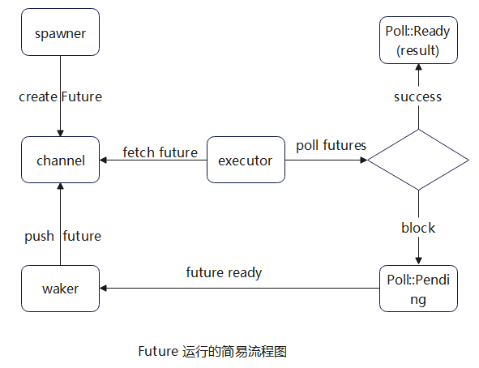

RustFutures
RUST FUTURES-Week1
参考文章
关于进程、线程与协程
假设你坐在一个位置上，桌子上摆满了你的书。进程切换就是你在这个位置上学习，然后别人也要来这个位置上学习，你要走了，所以你得把桌子上的书都清走；线程切换是你不看这本书了，转去看另一本书；协程切换就是你翻到某一页，感觉有些词汇不熟悉，就翻到了另外一页，等你忽然记起来这个词汇了，你就又翻了回去。在这个过程中，开销越来越小，效率越来越高。
绿色线程(Green Threads)
代码
原文档的green threads可能因为版本问题已经不能编译通过了，这是修改后的：
都是佬们写的，我只是个搬运工，之前有个ctx没对齐导致打印ctx时会出现segment fault，现已解决，大家可放心食用。
基于回调
基于回调的方法在编程中是一种常见的模式，尤其在处理异步操作时经常会用到。虽然在 JavaScript 中的回调地狱让人头痛，但在其他语言中，特别是像 Rust 这样的系统编程语言中，可以更好地管理回调。
在 Rust 中，基于回调的方法通常通过闭包来实现。闭包是一种可以捕获其周围环境并在稍后执行的匿名函数。下面是一个简单的例子，展示了如何在 Rust 中使用基于回调的方法：
use std::collections::HashMap;
// 定义一个保存回调函数的HashMap
// 键是字符串，值是一个闭包，它接受一个 i32 参数并返回一个 i32
// 这个闭包可以代表任何需要在以后执行的任务
let mut callbacks: HashMap<String, Box<dyn Fn(i32) -> i32>> = HashMap::new();
// 添加一个回调函数到 HashMap 中
callbacks.insert("double".to_string(), Box::new(|x| x * 2));
// 定义一个函数，它接受一个回调函数的名称和一个参数，然后调用相应的回调函数
fn call_callback(callback_name: &str, value: i32, callbacks: &HashMap<String, Box<dyn Fn(i32) -> i32>>) -> Option<i32> {
if let Some(callback) = callbacks.get(callback_name) {
Some(callback(value))
} else {
None
}
}
// 调用回调函数
if let Some(result) = call_callback("double", 5, &callbacks) {
println!("Result: {}", result); // 输出结果：10
}
在这个例子中，我们首先定义了一个 HashMap，它的键是字符串，值是一个接受 i32 参数并返回 i32 的闭包。然后，我们向 HashMap 中添加了一个回调函数，名称为 "double"，它将参数乘以 2。最后，我们定义了一个函数 call_callback，它接受回调函数的名称、参数和 HashMap，并调用相应的回调函数。通过这种方式，我们可以实现基于回调的方法。
关于闭包
闭包的基本语法
在Rust中，闭包的语法使用竖线 | | 来定义参数列表，箭头 -> 用于指定返回类型，大括号 { } 包含闭包的函数体。闭包的语法通常如下所示：
|param1, param2| -> ReturnType {
// 闭包的函数体
// 可以使用捕获的环境变量
}
闭包的三种形式
在Rust中，闭包可以写成三种形式，分别是：
-
FnOnce： 该闭包会获取它所捕获的变量的所有权（Ownership），并且只能被调用一次。通常用于消费被捕获变量的情况。 -
FnMut： 该闭包会获取它所捕获的变量的可变引用，并且可以被调用多次。通常用于修改被捕获变量的情况。 -
Fn： 该闭包会获取它所捕获的变量的不可变引用，并且可以被调用多次。通常用于不需要修改被捕获变量的情况。
闭包实例
闭包的捕获环境 闭包可以捕获其环境中的变量，这意味着闭包可以访问定义闭包时所在作用域中的变量。捕获的变量可以通过引用、可变引用或者所有权的方式进行访问。例如：
let x = 10;
let add_x = |y| x + y;
println!("{}", add_x(5)); // 输出 15
在这个例子中，闭包 add_x 捕获了变量 x，并将其与参数 y 相加。闭包可以自动推断捕获变量的引用类型。
从回调到承诺 (promises)
promises 可视为一种状态机
Promises 有三种状态：pending （进行中）、fulfilled （已完成）和rejected （已拒绝）。一旦状态从 pending 转变为 fulfilled 或 rejected ，它就会停留在该状态，并执行相应的处理程序。
承诺是解决回调带来的复杂性的一种方法。
javascript 回调
setTimer(200, () => {
setTimer(100, () => {
setTimer(50, () => {
console.log("I'm the last one");
});
});
});
javascript 承诺
function timer(ms) {
return new Promise((resolve) => setTimeout(resolve, ms))
}
timer(200)
.then(() => return timer(100))
.then(() => return timer(50))
.then(() => console.log('I'm the last one));
rust 中的 Future 和其它语言中的 Promise 类似，但它们是异步的。
Future
Future 是一种异步计算的结果，它代表了一个未来才会结束的计算。在 Rust 中，Future 是一种异步计算的抽象，它允许我们以一种统一的方式处理异步操作，而无需关心具体的实现细节。
Future 流程
Spawner方法用于生成Future, 然后将它放入 消息通道 中。- 执行器需要从 消息通道( channel ) 中拉取事件，然后运行它们。当一个任务准备好后（可以继续执行），它会将自己放入消息通道中，然后等待执行器
poll。 - 若在当前
poll中，Future可以被完成，则会返回Poll::Ready(result)，反之则返回Poll::Pending， 并且安排一个wake函数： - 当未来
Future准备好进一步执行时， 该函数会被调用，然后将该Future送入 消息管道 ，执行器从 消息管道 拉取Future, 再次调用poll方法，此时Future就可以继续执行了。(进入步骤2)

关于 Pin 和 Unpin 的理解
将固定住的 Future 变为 Unpin
之前的章节我们有提到 async 函数返回的 Future 默认就是 !Unpin 的。
但是，在实际应用中，一些函数会要求它们处理的 Future 是 Unpin 的，此时，若你使用的 Future 是 !Unpin 的，必须要使用以下的方法先将 Future 进行固定:
Box::pin， 创建一个 Pin<Box<T>>
pin_utils::pin_mut!， 创建一个 Pin<&mut T>
固定后获得的 Pin<Box<T>> 和 Pin<&mut T> 既可以用于 Future ，又会自动实现 Unpin。
use pin_utils::pin_mut; // `pin_utils` 可以在crates.io中找到
// 函数的参数是一个`Future`，但是要求该`Future`实现`Unpin`
fn execute_unpin_future(x: impl Future<Output = ()> + Unpin) { /* ... */ }
let fut = async { /* ... */ };
// 下面代码报错: 默认情况下，`fut` 实现的是`!Unpin`，并没有实现`Unpin`
// execute_unpin_future(fut);
// 使用`Box`进行固定
let fut = async { /* ... */ };
let fut = Box::pin(fut);
execute_unpin_future(fut); // OK
// 使用`pin_mut!`进行固定
let fut = async { /* ... */ };
pin_mut!(fut);
execute_unpin_future(fut); // OK
个人理解：
在这里，Pin 是一个包装着 不可移动类型的指针 ( eg: Box) 的类型 ，被 Pin 中指针包装的类型不能被移动， 但 Pin 的指针可以被移动和使用。
Pin 和 Unpin
Pin是一个结构体：
pub struct Pin<P> {
pointer: P,
}
它包裹一个指针，并且能确保该指针指向的数据不会被移动，例如 Pin<&mut T> , Pin<&T> , Pin<Box<T>> ，都能确保 T 不会被移动。
-
Unpin是一个特征，它表明一个类型可以随意被移动; -
可以被
Pin住的值实现的特征是!Unpin; -
实现了
Unpin特征，依旧可以Pin，毕竟它只是一个结构体，你可以随意使用， 但是不再有任何效果而已， 该值一样可以被移动 ！ -
一个类型如果不能被移动，它必须实现
!Unpin特征。